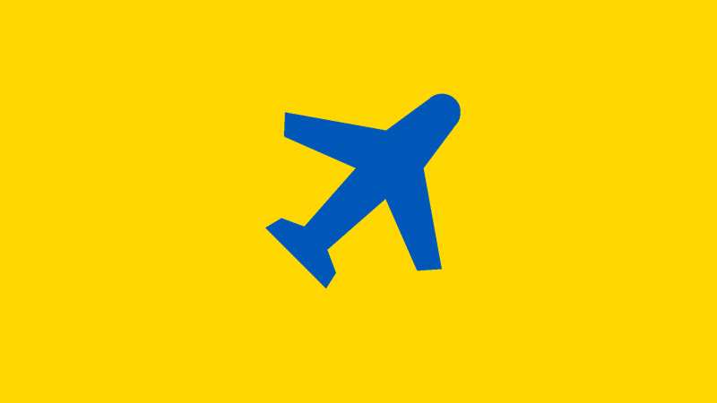
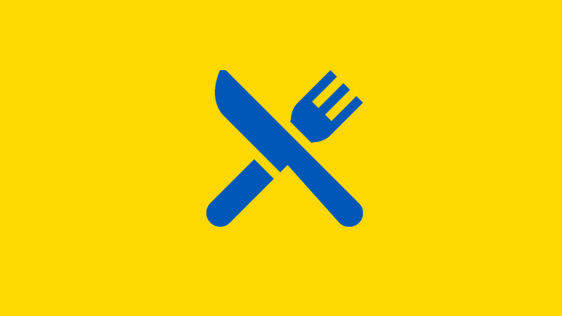
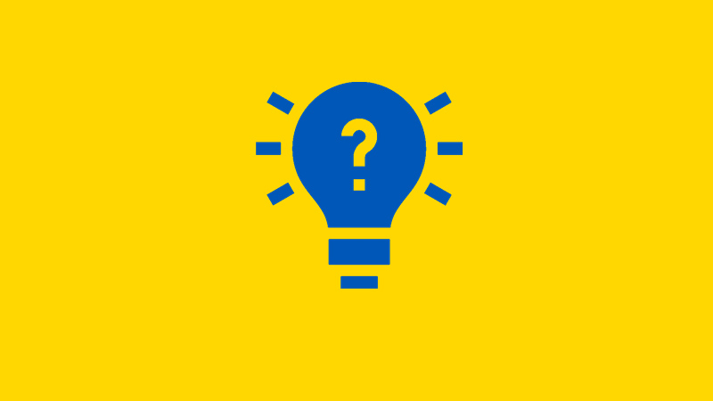
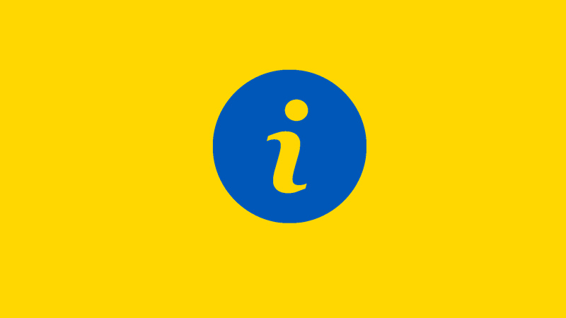

Explore o país
Escolha um dos temas abaixo para conhecer mais sobre a Ucrânia: seus pontos turísticos, sua culinária e curiosidades históricas.

Pontos Turísticos
Catedrais, praças históricas e a zona de exclusão de Chernobyl.
Ver página
Comidas Típicas
Borscht, varenyky e outros pratos da culinária ucraniana.
Ver página
Curiosidades
O acidente de Chernobyl e outros fatos marcantes do país.
Ver página
Sobre o País
Dados gerais, idioma, moeda e links para saber mais.
Ver página